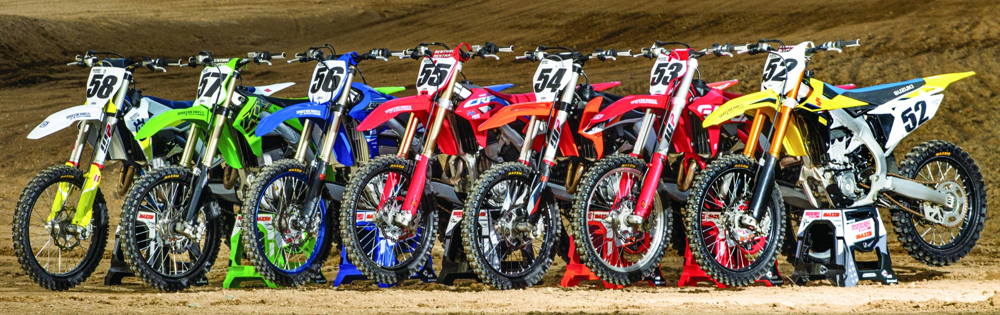

Inicio - Contacto - Sobre Nosotros
En Motos GP vivimos la pasión por el motocross. Ofrecemos las mejores motos de carrera 250cc y 450cc, diseñadas para máxima potencia, velocidad y rendimiento en pista
Trabajamos con las principales marcas del mundo como Honda, Yamaha, Kawasaki, Suzuki, garantizando motos de alto nivel para pilotos principiantes y profesionales.
Contamos con un amplio catálogo, asesoramiento personalizado y productos seleccionados para garantizar el mejor rendimiento en pista. ¿Dónde encontrarnos? Podés visitarnos en nuestro local físico en Cordoba - Villa maria o contactarnos de manera online en motosgp.com para recibir atención rápida y personalizada.
